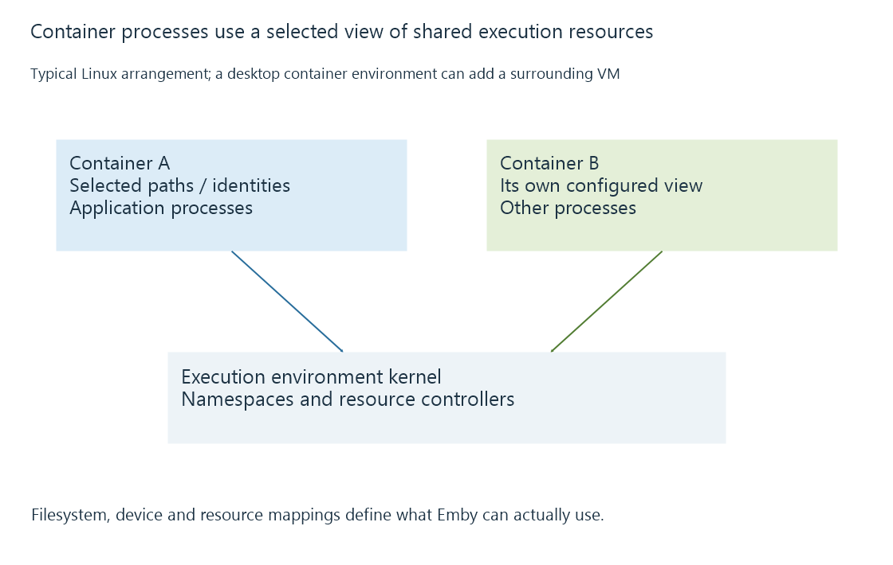

Software containers and shared-kernel isolation
A software container gives a process an isolated view of selected resources while using the kernel supplied by its execution environment.
A software container runs an application with a controlled view of resources such as files, processes and networking. In a typical Linux container arrangement, isolation uses kernel mechanisms including namespaces, while control groups account for or limit resource use.
The application still runs as operating-system processes. It does not automatically receive a separate operating-system kernel merely because its package is called a container.
The process sees a constructed environment

An Emby container can see source media at /media and application data at another mounted path. Those names can differ from the host's locations. A bind mount or volume defines how they are connected.
| Boundary | What it can change |
|---|---|
| Filesystem view | Which paths and mounts are visible |
| Process namespace | Which processes are visible through that namespace |
| Network namespace | Interfaces, ports and routes available to the process |
| User namespace | Mapping between inside and outside IDs |
| Resource controls | CPU, memory or I/O accounting and limits |
These are configured properties, not proof that every container uses identical isolation settings.
The kernel boundary differs from a VM
A VM runs a guest operating system with a guest kernel. Containers on a Linux host usually use that host kernel. A desktop container environment can itself run Linux containers inside a VM; those containers use the kernel of that Linux execution environment.
An image that contains Linux user-space files therefore does not carry an unrestricted new Linux kernel for each container. Native code must fit the actual operating-system and architecture arrangement.
Media access is an explicit mapping
Containerized Emby still needs readable media, writable persistent data and writable temporary output. A host file being visible to the administrator does not make it visible or readable in the container.
Hardware acceleration also needs a supported device interface and required libraries or drivers in the relevant environment. Container packaging does not manufacture a missing codec engine.
Resource limits govern available work within that shared system. They can constrain a container without reserving an equal set of physical devices solely for it.
See Also
- Virtual machines and the guest server environment
- Docker images, running containers and writable layers
- Container bind mounts and host-path mappings
- Container CPU and memory limits